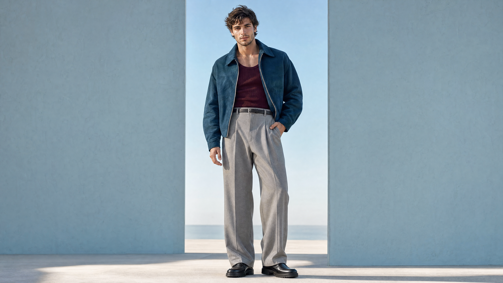

Actitud urbana.
Diseño con carácter.
Hombre adulto de 25 años. Ante azul petróleo, punto burdeos y sastrería gris perla. Una pose con peso, mirada y gesto más naturales. Imagen base generada en 4K, sin marcas ni textos incorporados.

Esta entrega es la imagen base. La campaña rubia sigue activa y las anteriores continúan en la biblioteca. Los vídeos de este modelo todavía no se han generado.
Dirección de actuación para los vídeos
Respiración, mirada y contrapeso natural de los brazos durante el giro; una reacción sutil al abrirse el escenario; viento suave en el pelo; brazos que acompañan el salto y amortiguan el aterrizaje. Cada acción regresa a su pose de referencia para mantener las transiciones.
Ver prompt y dirección